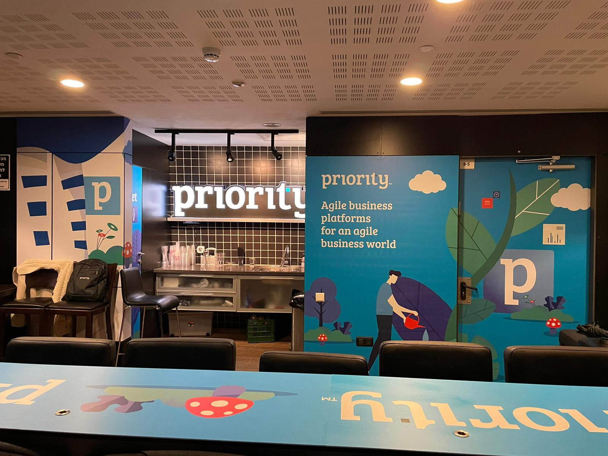

Hover
Hover
Hover
Hover

 Hover
Hover
 Hover the card
Hover the card
 Reveals on scroll
Reveals on scroll
 Move cursor over me
Move cursor over me
Hover the button

Brand
Studio
Hover each word
Draws on scroll

 Scroll the page
Scroll the page

Always playing
✺
Always spinning
Hover the buttons
0%
Tied to page scroll
0
Projects shipped
Counts when visible
Ideas that
won’t sit still.
Reveals on scroll
BrandingWebMotionStrategyPackaging
BrandingWebMotionStrategyPackaging
Read the case study
Click & hover
19
Sticky-Stacking Cards
Panels pin to the top and stack on top of one another as you scroll — a guided, slideshow-like way to walk through a process or a set of featured cases. Scroll this section slowly to feel it.
Where in Picpong — the “our process” walkthrough or a curated featured-work reel.
Step 01
Discover
Step 02
Design
Step 03
Build
Step 04